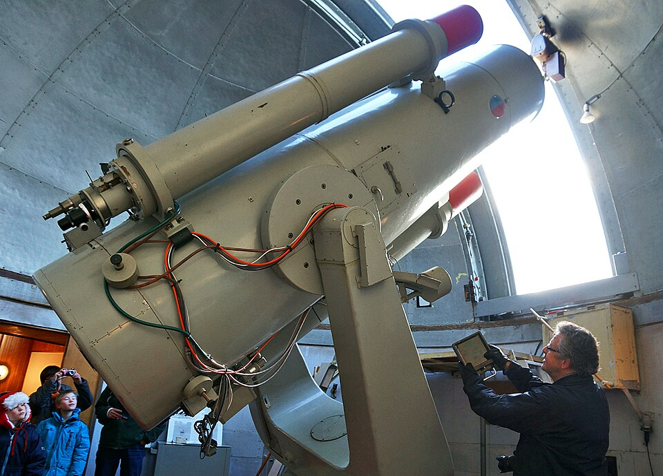

Главная
Планеты и условия
Исследования
Гипотезы
Крупные миссии и исследования
Ниже — примеры ссылок на документы разных форматов:
Отчёт о миссии (PDF)
Учебный отчёт (DOCX)
Таблица данных (XLSX)
Иллюстрация (JPG)
Изображения телескопов

Телескоп, используемый для поиска экзопланет.